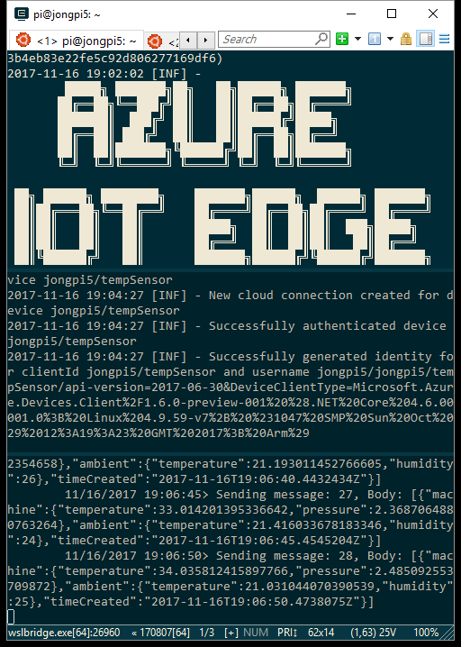

Azure IoT Edge Public Preview was just announced at Microsoft Connect.
Here’s how to get it running on Raspberry Pi with Raspbian Stretch or Stretch Lite. Raspbian Jessie should work as well, but I haven’t tested it yet. Azure IoT Edge does not run on Raspberry Pi with Windows 10 IoT Core, you must use an x64 based board such as the MinnowBoard. Windows 10 IoT Core Instructions can be found here.
Raspberry Pi Setup
1. Setup Raspberry Pi - Follow these instructions to get your Raspberry Pi setup for general Pi dev.
2. Install Python && pip - The Azure IoT Edge Runtime is a Python pip, so Python and pip are required on your edge device.
Raspbian comes with Python 2.7, but run the following to make sure you have it installed.
|
It should output Python 2.7.13. Python 3 will also work.
Raspbian Full also comes with pip 9.0.1, but run the following to make sure you have it installed. Raspbian Lite does not come with pip, so skip to the install command below to install it.
|
It should output pip 9.0.1 from /usr/lib/python2.7/dist-packages (python 2.7).
If you do not have either of those, then you can install with the following command:
|
3. Upgrade Setup Tools
You will find the Azure IoT Edge Runtime on pypi here, which has the Raspbian specific steps, which I’ve included here as well. I’ve asked the team to include these steps in the Linux setup tutorial guide. This issue is being tracked on GitHub here: https://github.com/Azure/iot-edge/issues/419
Open a Terminal and run the following:
|
3. Install Docker - The Azure IoT Edge Runtime runs as a container and each module is a container, so Docker is required.
Azure IoT and Azure IoT Edge Setup
Now that you have your Raspberry Pi all setup, you can now follow the instructions on the official Azure IoT Edge docs site: Deploy Azure IoT Edge on a simulated device in Linux
When you’re all set up and running, you can use ConEmu to see all the logs flowing through in a nice paned layout.

Troubleshooting
1. Upgrade Setup Tools
If you see any of the following errors, then please run the Upgrade Setup Tools step above.
|
|
|
2. RocksDB Issue
You will see the following error when you run Azure IoT Edge on Pi. It is a known issue and being tracked on GitHub here: https://github.com/Azure/iot-edge/issues/417. The result is that you won’t have store-and-forward capabilities (doesn’t persist messages to disk) on Raspberry Pi. The Azure IoT Edge team is working on a fix.
|
3. KeyNotFoundException
If you see the following error and you aren’t receiving messages, then stop the runtime, rerun setup and restart it. Instructions for doing so can be found here. This issue is being tracked on GitHub here: https://github.com/Azure/iot-edge/issues/418
|
4. TypeError: unsupported operand type(s) for -=: ‘Retry’ and ‘int’
If you see the following error when installing the runtime, then restart the runtime. I only saw this once and I’m not sure what caused this issue, but I have reported it on GitHub here: https://github.com/Azure/iot-edge/issues/420
|